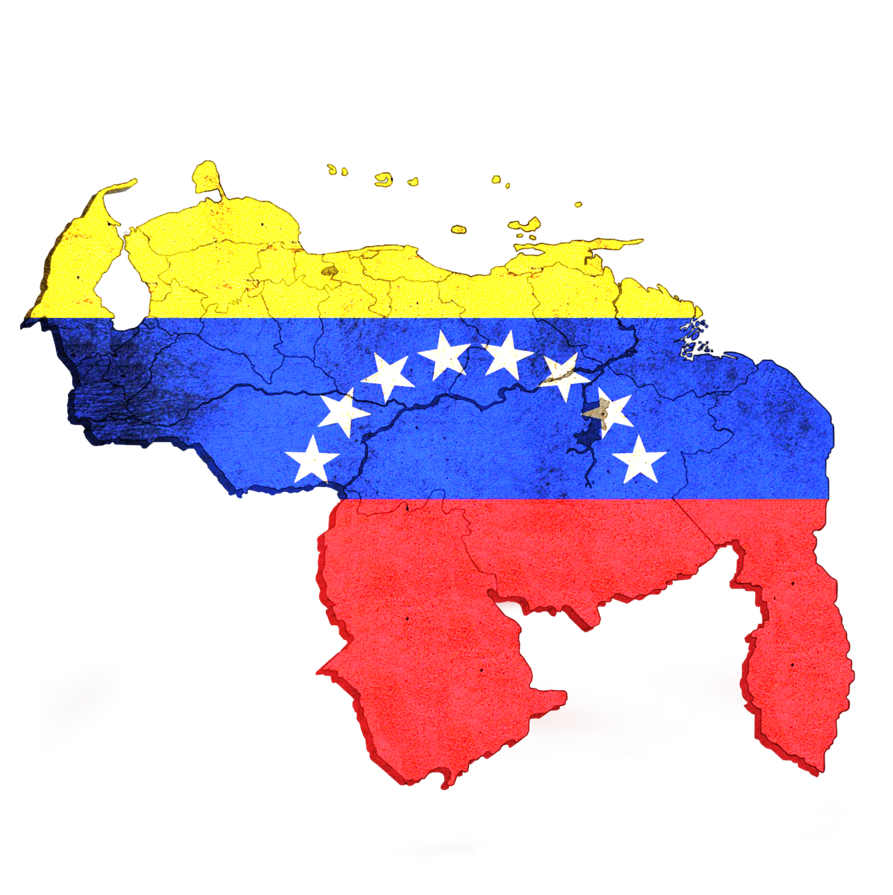

VENEZUELA

Venezuela es un Estado nacional cuyo nombre oficial es República Bolivariana de Venezuela. Su capital es la ciudad de Caracas. Se encuentra al norte de América del Sur, y limita al este con Guyana, al sur con Brasil y al oeste con Colombia. Se trata del sexto país más extenso y el quinto más poblado de América del Sur.